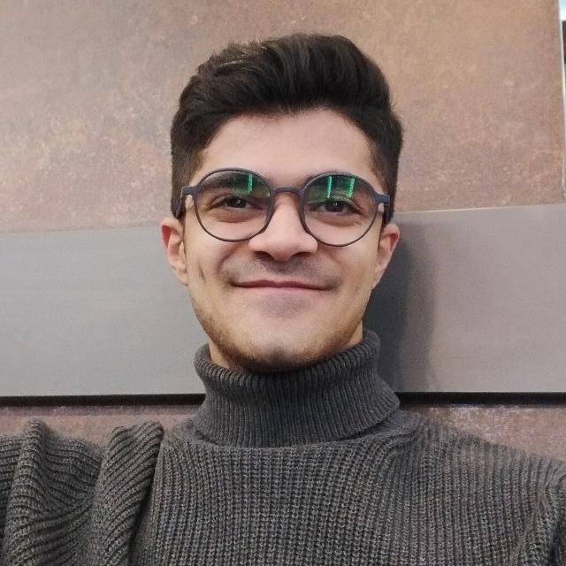
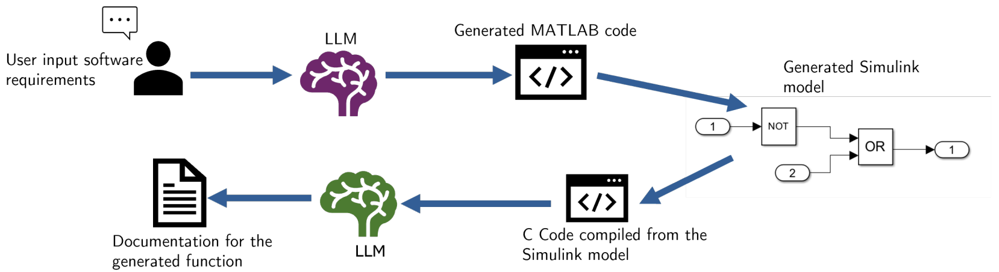
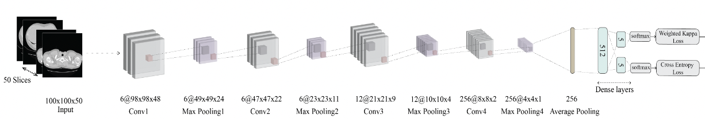

|
Behzad Shomali I recently completed my Master's in Computer Science with a strong focus on ML, deep learning, and their applications in real-world settings. My Master's thesis, completed at BMW Group, focused on developing a probabilistic, hardware-aware latency predictor for neural architecture search (NAS). Previously, at FEV Group in collaboration with RWTH Aachen University, I worked on developing LLM-based AI assistants for coding environments. I also have hands-on experience with vision-language models and have contributed to improving vision transformers for object grounding based on textual prompts. Throughout my academic and professional journey, I've had the opportunity to work in both research institutes and industry settings. This has included publishing research papers, building machine learning applications, and collaborating across interdisciplinary teams. My core interests lie in CV/NLP applications, vision-language models and ML systems. Email / Scholar / ResearchGate / LinkedIn / Github |
 |
{kind=link}
📢 News07.2025 I've officially graduated with a Master's degree in Computer Science from the University of Bonn. 03.2025 I submitted my Master's thesis at the University of Bonn, conducted at BMW: “High-Fidelity, Sample-Efficient Latency Predictor for Hybrid Hardware-Aware NAS” |
🔬 Featured Research |

|
A modular multi-color fluorescence microscope for simultaneous tracking of
cellular activity and behavior
Euphrasie Ramahefarivo , Leonard Böger , Takkasila Saichol , Behzad Shomali , Luis Alvarez , Monika Scholz bioRxiv, 2025 |
|  |
Generative Artificial Intelligence for Model-Based Graphical Programming in
Automotive Function Development
Abdelrahman Abdalla , Harsh Pandey , Behzad Shomali , Joschka Schaub , Arne Müller , Markus Eisenbarth , Jakob Andert SSRN, 2024 |
|  |
Classification of Tuberculosis Type on CT Scans of Lungs using a fusion of
2D and 3D Deep Convolutional Neural Networks
Emad Aghajanzadeh , Behzad Shomali , Diba Aminshahidi , Navid Ghassemi CLEF2021 Working Notes, 2021 |
|
Source code and design borrowed from Jon Barron's and Walid Bousselham's websites. |